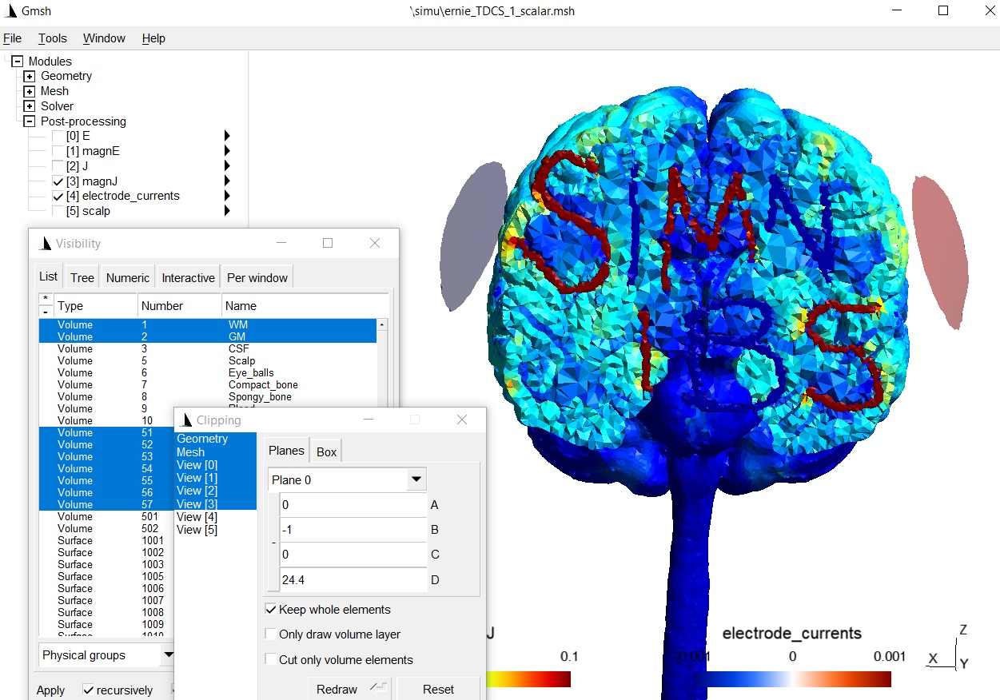

add_tissues_to_upsampled¶
Description¶
Adds extra tissues from an existing tissue label file to tissue_labeling_upsampled.nii.gz. The tissues to-be-added need to be in a NIfTI-file, which is in the same space as the T1-weighted scan that was used as input to charm.
Usage example¶
Download an example extra tissue file
here. The mask contains the letter “SIMNIBS” (each letter has a different label from 1 to 7), as can be seen when, e.g. overlaying the mask on the original T1-weighted image:
{kind=link}
Move the nifti file into the m2m-folder of the “Ernie” example data set (i.e., m2m_ernie).
Open a terminal and go to m2m_ernie in the example data set.
Make a copy of the tissue_labeling_upsampled.nii.gz (e.g., tissue_labeling_upsampled_orig.nii.gz) that is found in the sub-folder label_prep.
Run
add_tissues_to_upsampled -i simnibs.nii.gz -t ./label_prep/tissue_labeling_upsampled.nii.gz -o ./label_prep/tissue_labeling_upsampled.nii.gz --offset 50
The new tissue_labeling_upsampled.nii.gz file will include the extra labels from label number 51 to label number 57. That is, the offset value is added to the label values inside the extra tissue volume.

Now recreate the head model by running
cd ..
charm ernie --mesh
The updated head mesh can be checked by visualizing it in gmsh:

Run simulations: We have to define the conductivities of the new tissue labels:
Python
from simnibs import sim_struct, run_simnibs S = sim_struct.SESSION() S.subpath = 'm2m_ernie' S.pathfem = 'simu' S.fields = 'eEjJ' # save e-field and current density # add a TDCS simulation tdcs = S.add_tdcslist() tdcs.currents = [0.001, -0.001] # Current flow though each channel (A) # The new tissues were added using label numbers 51 to 57. # We need to assign a conductivity to each tissue label. # Note: Python indexing starts with 0, thus the conductivities have # to be assigned starting from index 50 of the conductivity list tdcs.cond[50].value = 10 # [S/m] tdcs.cond[50].name = 'S' tdcs.cond[51].value = 0.01 # [S/m] tdcs.cond[51].name = 'I' tdcs.cond[52].value = 10 # [S/m] tdcs.cond[52].name = 'M' tdcs.cond[53].value = 0.01 # [S/m] tdcs.cond[53].name = 'N' tdcs.cond[54].value = 10 # [S/m] tdcs.cond[54].name = 'I2' tdcs.cond[55].value = 0.01 # [S/m] tdcs.cond[55].name = 'B' tdcs.cond[56].value = 10 # [S/m] tdcs.cond[56].name = 'S2' electrode1 = tdcs.add_electrode() electrode1.channelnr = 1 electrode1.centre = 'FC5' electrode1.shape = 'ellipse' electrode1.dimensions = [50, 50] electrode1.thickness = 4 electrode2 = tdcs.add_electrode() electrode2.channelnr = 2 electrode2.centre = 'FC6' electrode2.shape = 'ellipse' electrode2.dimensions = [50, 50] electrode2.thickness = 4 # Run simulation run_simnibs(S)
MATLAB
S = sim_struct('SESSION'); S.subpath = 'm2m_ernie'; S.pathfem = 'simu'; S.fields = 'eEjJ'; % save e-field and current density % add a TDCS simulation S.poslist{1} = sim_struct('TDCSLIST'); S.poslist{1}.currents = [1e-3, -1e-3]; % Current going through each channel, in Ampere % The new tissues were added using label numbers 51 to 57. % We need to assign a conductivity to each tissue label. S.poslist{1}.cond(51).value = 10; % in S/m S.poslist{1}.cond(51).name = 'S'; S.poslist{1}.cond(52).value = 0.01; % in S/m S.poslist{1}.cond(52).name = 'I'; S.poslist{1}.cond(53).value = 10; % in S/m S.poslist{1}.cond(53).name = 'M'; S.poslist{1}.cond(54).value = 0.01; % in S/m S.poslist{1}.cond(54).name = 'N'; S.poslist{1}.cond(55).value = 10; % in S/m S.poslist{1}.cond(55).name = 'I2'; S.poslist{1}.cond(56).value = 0.01; % in S/m S.poslist{1}.cond(56).name = 'B'; S.poslist{1}.cond(57).value = 10; % in S/m S.poslist{1}.cond(57).name = 'S2'; % define first electrode S.poslist{1}.electrode(1).channelnr = 1; S.poslist{1}.electrode(1).centre = 'FC5'; S.poslist{1}.electrode(1).shape = 'ellipse'; S.poslist{1}.electrode(1).dimensions = [50, 50]; S.poslist{1}.electrode(1).thickness = 4; % define second electrode S.poslist{1}.electrode(2).channelnr = 2; S.poslist{1}.electrode(2).centre = 'FC6'; S.poslist{1}.electrode(2).shape = 'ellipse'; S.poslist{1}.electrode(2).dimensions = [50, 50]; S.poslist{1}.electrode(2).thickness = 4; % Run simulation run_simnibs(S)
The simulation results with the new tissues:
{kind=link}
Further notes¶
Type
add_tissues_to_upsampled -hfor more information and optionsPlease see How to manually edit a head model for a related example